本文直接跳过前面若干基础概念，前提需弄懂TP,FP,FN,TN,精确率，召回率，IOU等，具体可以参照文后Reference，下面进入正题，边讲述边实现，拒绝只谈不做和只做不谈。相比前人代码，本实现思路简洁，通用有效，最后根据官方现成函数计算AP进行对比。
一、引言案例
加载groundTruth数据和某算法预测的目标检测框
1 | load calmAP.mat % 包含检测值和groundTruth |
显示groundTruth，即真值，在图中标注为tennis、tennisRacket两类。
1 | gTruth |
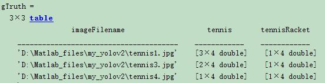
表格中第一列为图片路径名字，第二列为“tennis”的ROI，第三列为“tennisRacket”的ROI，M*4大小，每行为[x,y,width,height]。从表格中可以看出这里只用了3张照片，为简便起见，下面3张图只标注了有限数量的网球和网球拍两种目标。
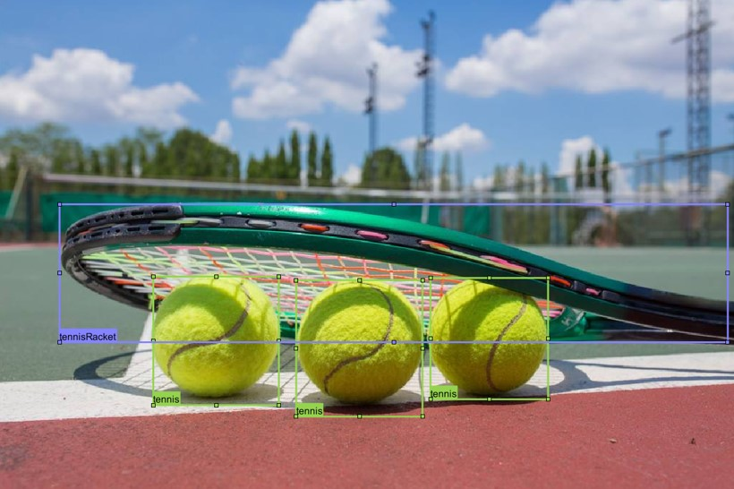
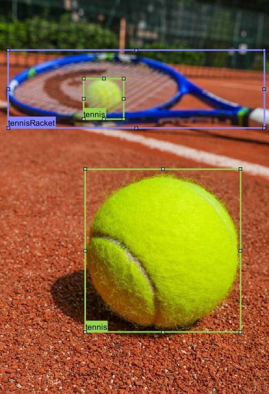
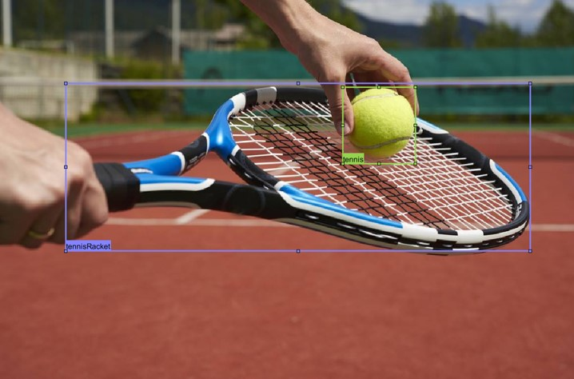
某目标检测算法对上面3张图像的检测结果统计如下：
1 | detectionResults |
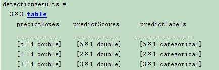
现把其中一幅图像检测结果(predictTennis、predictRacket)和真值(tennis、tennisRacket)画到一张图中如下：
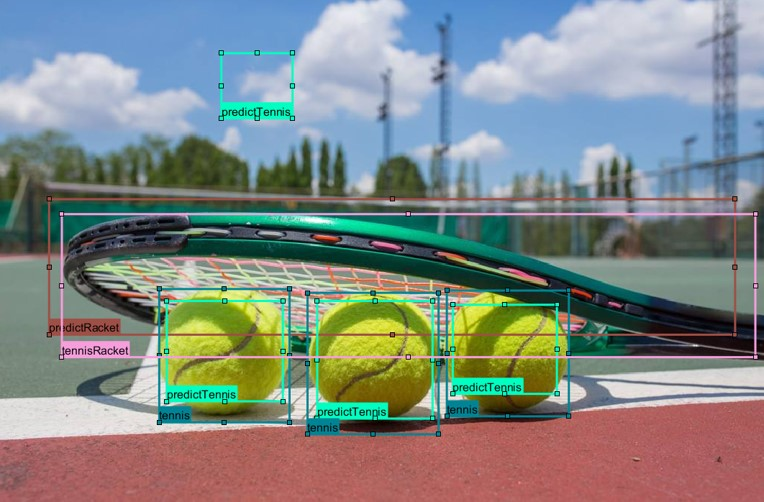
1 | groundTruthData = gTruth(:,2:end) |
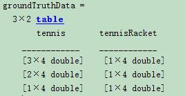
二、问答
为什么目标检测算法要选取AP或者mAP来评估性能优劣？而不是准确率(accuracy)/精确率(precision)/召回率(recall)？
因为目标检测算法如果只关注某一个单一指标，如精确率，精确率在某种算法下改变其阈值可以达到100%（如判断球场上的球员，只要符合移动的物体都可以当作球员，此时很多目标都会当作球员，包括球，移动的任何物体，精确率非常高，但是召回率很低），这样就造成了算法无法比较。综合考虑，既要获取较高的精确率也要获取较高的召回率。这时可以考虑在二维图上很方便绘制出PR曲线，每种算法每种检测的目标类型都可以绘制独立的一条曲线，但问题是单纯看曲线也很难比较算法的综合优劣，故而考虑曲线下的面积AP来计算，面积越接近1性能越好。曲线下的面积理解为不同召回值的情况下所有精度的平均值。
为什么计算AP的过程中要按照检测框的预测分数从大到小排序？
因为预测分数大小与判断为TP或者FP有非常大的概率关系，实际判别以IOU判断，先以大概率的进行PR曲线求点，这种大概率体现在所有的检测框——对应曲线上的点（横坐标为召回率，纵坐标为精确率）整体更接近坐标(1,1)，远离(0,0)点，后面概率小的检测框（曲线上的点）对整个比重较小。试想，如果不是按照预测分数大小排序，乱序排列，随着检测框的逐步增加，召回率也正常持续增加，精确率有很大的不稳定性（概率上看检测为TP的情况是随机性的）。
三、算法核心步骤
由于非常不方便书写公式，故截图代替
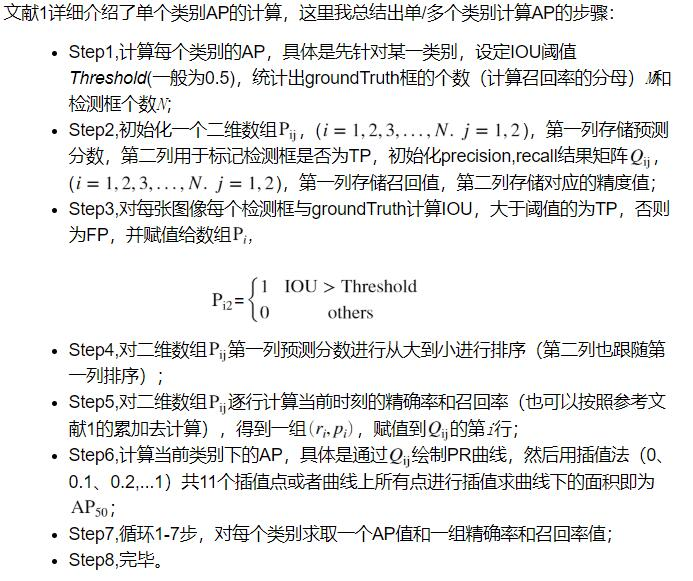
注意误点：
1、AP即Average Precision，并不是指每张图像求取单个类别的Precision，然后对所有图片求平均！而是在单个类别的召回值从0变化到1的所有精度值平均值！
2、评估没有accuracy，因为没有TN，这不同于分类任务评估。
3、步骤6中插值方法不是线性插值，插值点的精度值是不小于该插值点所有召回率的精度值的最大者！
四、计算
方法一，根据文后参考文献方法计算
1 | throushold_IOU = 0.5; |
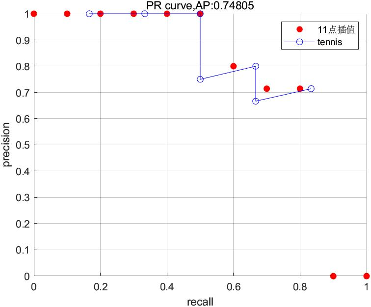
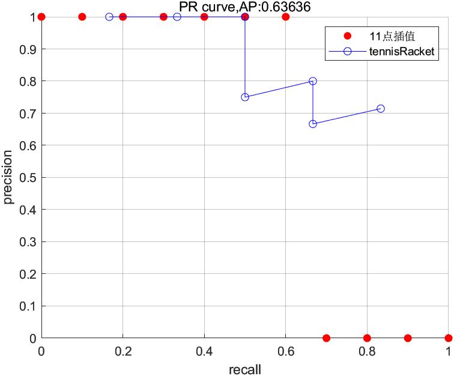
方法二，调用系统函数求取
1 | throushold_IOU = 0.5; |
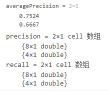
1 | figure; |
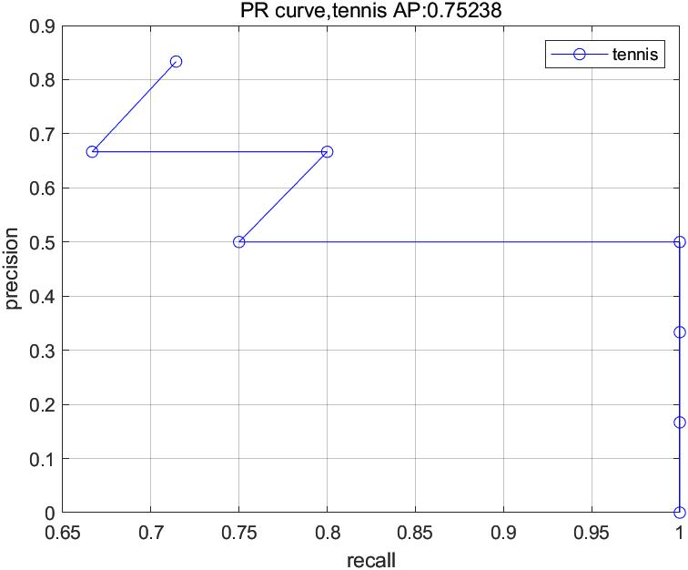
从上面两种方法对比可以看出，图像和数值上有略微区别，原因在于系统函数evaluateDetectionPrecision采用的细则策略有差异，其输出值precision和recall比检测数量多1，但这不影响整体使用评估，其上两种方法都正确。另外下面示例根据文献1提供的方法数据，用同样的11点插值方法，计算AP，验证结果一致性。
五、示例
根据参考文献1的典型示例，导入检测和groundTruth数据进行评测：
1 | load DetectionAndGT.mat % 包含文献1的检测和groundTruth |
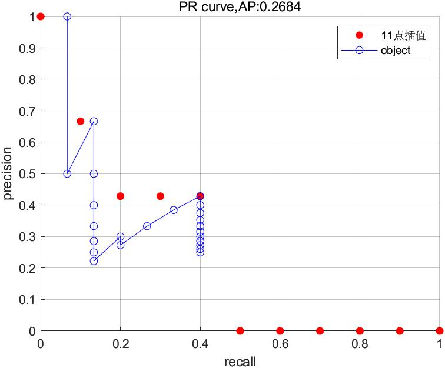
根据图像结果和计算的AP值，与文献完全吻合，说明函数getAP()的计算的正确性。另与官方提供的python评估代码看，也说明代码简洁性、易操作性。附getAP()函数，每步严格按照上面提到的** “算法核心步骤” **7个步骤进行，方便理解。
以上所有文件和数据已经放在谷歌网盘， 百度网盘， 提取码：ub8m，方便复现~
1 | function [averagePrecision,precision,recall] = getAP(detectionResults,groundTruthData,throushold_IOU) |
Reference
[1] Object-Detection-Metrics
[2] 目标检测中的mAP是什么含义？
[3] Detection Evaluation